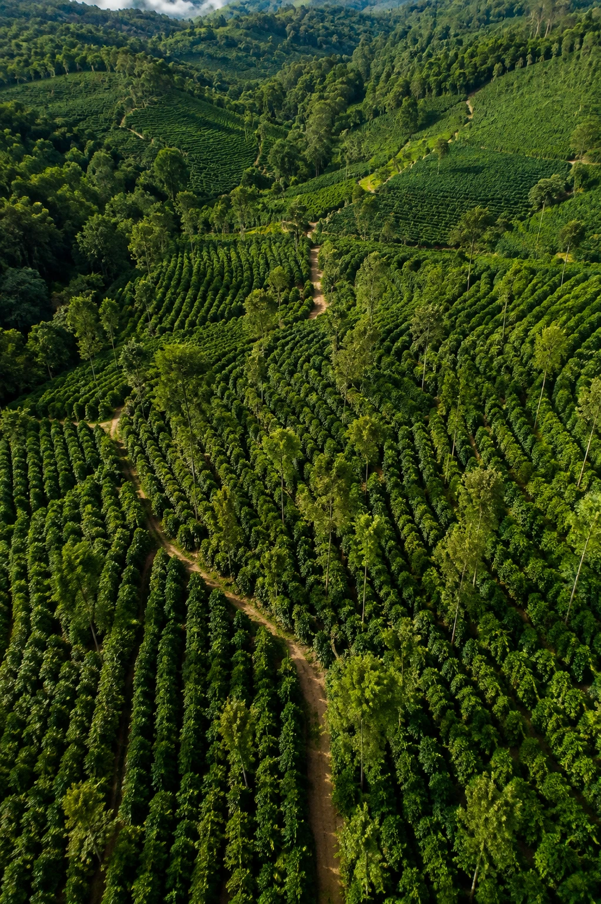

Sumber Terpercaya
Dipilih langsung dari petani lokal terbaik dengan standar kualitas yang terjaga.
Kisah kami
Jembatan tepercaya antara asal kopi Indonesia yang istimewa dengan para pembeli terbaik di dunia.
Siapa kami
Kami hadir untuk memperkenalkan kekayaan kopi Indonesia melalui green bean yang dipilih dengan cermat. Kami membangun hubungan yang bertumbuh bersama petani, mitra pengolahan, dan pembeli internasional.
Dengan perhatian pada konsistensi, transparansi, dan kesiapan ekspor, kami merawat setiap lot agar karakter khas asalnya tetap sampai ke tujuan.
SETARA
Perusahaan Ekspor Kopi
Indonesia

Indonesia
Lanskap dengan karakter kopi
yang khas di tiap daerahnya.
Yang memandu kami
Keempat prinsip ini menjaga cara kami memilih, memproses, dan memperkenalkan kopi Indonesia ke pasar dunia.
Dipilih langsung dari petani lokal terbaik dengan standar kualitas yang terjaga.
Diproses melalui sistem produksi yang bersih, aman, dan memenuhi standar operasional.
Setiap produk melewati proses inspeksi dan kurasi untuk memastikan kualitas terbaik.
Mendukung kesejahteraan petani melalui praktik bisnis yang adil, transparan, dan berkelanjutan.
Di balik biji kopi
Sekilas proses di lapangan — bagaimana setiap bibit dirawat sebelum menjadi kopi yang siap diekspor.
Kami percaya kemitraan kopi yang paling kuat lahir dari kejelasan, perhatian, dan rasa hormat bersama terhadap asalnya.